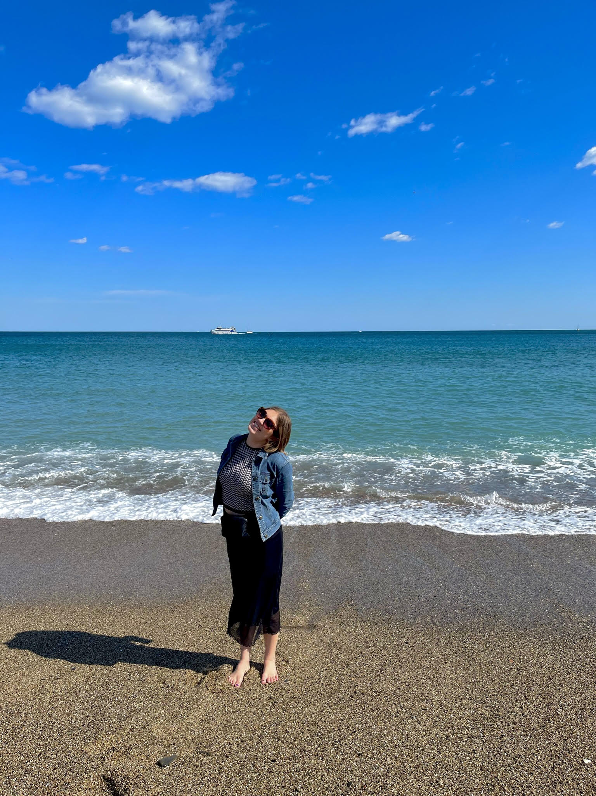
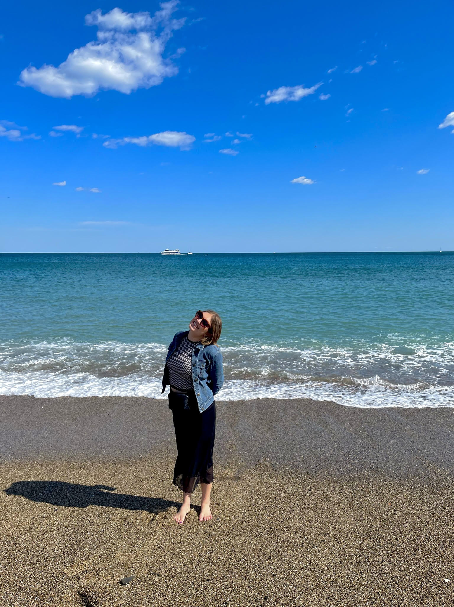

•Sevilla
•Málaga
•Mallorca
•Madrid
•Salamanca
•Segovia
•Bilbao
•San Sebastian
•Valencia
•Tenerife
•Toledo
Cáceres•
•Trujillo
•Merida
The city in which my "homebase" for the semester is!
My apartment is in the neighborhood called Lavapiés which is just South of the famous Puerta del Sol area. I have 7 roommates, 6 of which are
from different countries in the EU. I attend classes a 10 minute walk from where I live, however the public transportation system is amazing.
The classes I am currently taking are Spanish
Civilization; Spanish Conversation; World Relgions; and Culture, Globalization, and the Media, since it is my last semester of undergrad my
course load is light and a lot different than the computer science classes I had been taking, a refreshing and thought-provoking change in pace.
A typical week of my study abroad experience includes going to class each day and grabbing a café con leche in between class or after, or getting
a glass of tinto de verano with salty tapas and talk. I then go home and grab dinner at the grocery store, Carrefour, across the street, and do
homework or watch a movie with friends to round out the night. Once a week I attend an incredible Flamenco class. On the weekends I usually eat
out or get coffee with friends and then spend the night at a club or bar, if I am not on a weekend trip.
The list of highlights continues to grow each day as I try new cafés, bars, shops, and parks, but some of my favorites so far:
Getting coffee at Azura bar, shopping near Puerta del Sol, sitting on rooftops on Gran Vía, seeing live shows, walking around Plaza de España and watching the
sunset near Templo de Debod, getting drinks in the Moncloa area, and trying out new restaurants around the city.


Spent a weekend here and stayed at an VRBO right next to the Plaza Mayor, a central spot in the city.
Highlights included: Daniel's
Chupiteria, the Roman Bridge, and the small town feeling of the beautiful town.


Spent a free Friday with about 13 other students from the program in Segovia! I mere 1 hour bus ride away passing through the breathtaking mountains that separate Madrid from Segovia, the city proved to be a glorious medieval snapshot. While updated to the times, historical artifacts like the Aqueducts and the Alcázar de Segovia were absolutely incredible. It was amazing to see things that I had only read about in books or seen pictures of in real life.


The first class trip for our program was a day trip to stunning Toledo. Known as the city of three religions, our program teachers gave us a tour of various sites around the city including Mosques, Synagogues, and Churches, some of which had been repurposed as different religions ruled the city. Since the city is a located in a hilly area, the views looking towards the city and from the city beyond where spectacular. I could spend an entire day admiring the views. I hope to return to Toledo later in the semester.


A stunning island off the coast of Morocco and Western Sahara. My best friend from the US and I spent the long weekend there sitting by the pool, walking along the coast of stunning Puerto de la Cruz and its black rocky beaches and crashing waves. The island is the result of the volcano that stands in the middle of Tenerife, which one can see at many points. The ability to see the volcano and then turn my head the other way to look at the ocean, was such a unique experience that I could not get over. The weather started beautifully warm and got colder as the weekend went on, but the rain allowed for us to catch a Tottenham football game at a British bar and obtained some delicious pizza. Cayla raved about the plantains and we saw a few plantations in the area. We also visited the most beautiful tropical botanical garden with the greatest variety of palms that I have ever seen. I would highly recommend that people traveling to Spain or Europe make the trip.


Took our overnight school trip to the autonomous community of Extremadura which is a western region touching Portugal. The region is famous for long preserved Roman cities, sites, wine, and jámon iberico. We started in Trujillo, a small city with a large castle that was the inspiration for Casterly Rock in Game of Thrones season 7. The city was the birthplace of Pizarro, the conquistador of Peru, not the best thing to be famous for. Next we spent the rest of the day in Cáceres home to another scene from Game of Thrones season 7, golden buildings and palaces, and where we spent a night in the Plaza Mayor celebrating Carnaval (sort of like Fat Tuesday in the US as a celebration before lent). The next day we traveled to Mérida and saw reminents of a Roman ampitheater, in which me and a few friends sang "The Lion Sleeps Tonight", a Roman bridge, and the Temple of Diana. It was a wonderful experience in a lesser known area that allowed me to get to know people in my program better and visit an area that I never would have otherwise.


Had the most incredible Spring Break (Semana Santa) around Spain. Started off late Thursday night after school and a delayed flight in Mallorca, Alcúdia specifically, after less than 1.5 hour flight from Madrid. We spent three nights on the island. I suggested this island because one of my favorite reality tv shows, Love Island UK, is typically filmed on a villa on the island. Also, it is known for its relaxed vibe and fantastic beaches. We spent that Friday on a four hour cadamaran out of Palma, the capital and city across the entire island from our Airbnb, which was not bad since it was literally a 45 minute taxi ride or 1.5 hour public bus ride across the island. The cadamaran experience was one of my favorite things to happen to me in Spain. Although the weather was not super warm, the experience of traveling on a nice sailboat around the Mediterranean with my friends, and four other kind girls, two from France and two studying abroad in Paris but from New York, having wine and some tapas on the blue water was incredible. We also ran into the worlds for sailing, so we got to see the most interesting boats/wind surfing things with their respective countires on the sail race before our eyes, a sight that I have only seen during the Summer Olympics. We spent the rest of the day in Palma walking around, seeing the only circular Gothic castle in Spain, and soaking in the sun. The next day we basically spent the day on the beach that was a five minute walk from our Airbnb and ran into some other people that are part of our program that happened to be staying near us, which was crazy. The water was cold and the beach was gorgeous with the whitest sand that I have ever seen. A couple of my friends and I, despite the cold, jumped in and enjoyed the salty sea. We spent some time exploring the small yet full of character city of Alcúdia containing fantastic shops and architecture. We then left for Sevilla, a city everyone who had traveled to Spain raved about. We stayed in a hostel, my first time staying with strangers like that, and it was quite rainy for the majority of our three days there, but honestly worked out for the best. Due to the rain, people were less willing to try the outdoor tourist sites which gave us an opportunity to experience the Alcázar, Las Setas, and the famous Plaza de España (which was a filming location of Star Wars II) with little crowds. Also, due to it being Semana Santa, we saw several processions, a well-known Easter week Spain event, and often went out of our way to avoid them. It was cool to see things that I had learned about in school in the United States in person, felt like a true cultural experience. Next, we ended our Semana Santa plans in a city outside of Málaga, Torremolinos, and practically laid out on the beach and drank phenominal cocktails. We quickly found that the area was a hotspot for European tourists, we compared it to Florida for the USA. Although it was an obvious tourist beach town, the food, drinks, and experiences we had were exactly what we wanted. My friend and I woke up one day to watch the sunrise over the sea, absolutely beautiful. I am so grateful for my spring break experience with some of my close friends that I met on the program and seeing so much of Spain's diverse and stunning landscape, culture, and beaches. I hope to return to all of these places someday.
Spent the weekend with some of my best friends from my study abroad program in Valencía for Las Fallas festival. We arrived Thursday night and spent the night walking along the beach touching the Mediterranean Sea. The rest of the weekend was spent exploring the beauty and festivities of Las Fallas. The festival is an old pagan celebration where Valencian families create huge paper mache statues that on are burned on Saturday along with huge firework displays everywhere. There were about 200 fallas throughout the city ranging in size and theme, mostly relating to a political statement, some were obscure and others very obvious. We were also able to walk around the touristy areas of the stunning city. A few highlights include trying agua de Valencia, a cocktail containing various types of alcohol and orange juice to make a drink as easy to drink as water. We also witnessed the burning of two fallas, an interesting sight to behold. The journey home did not go as planned. Spanish culture is very lax and not typically time efficient, however we were one minute late to catch our bus due to issues finding a taxi to get there, and the bus had left once we arrived. Luckily we all sat down and problem solved a way home since all the buses back to Madrid were booked. We ended up getting a BlaBlahCar (like far distance Uber) to Cuenca, a small industrial city between Valencía and Madrid, and took a bus from there. Although it was a long tough day, I think that we will treasure and laugh at the happenings now that it is over. I would highly recommend visiting the city, at any time of the year.


Absolutely loved Barcelona, had the most wonderful tour guide, Laura take us to some stunning places in the city. We started touring the beautiful homes on Passeig de Gracia, a couple designed by the famous architect Gaudí. We then saw another stunning piece by Gaudí, La Sagrada Familia, designed to be the tallest church in the world by its completion in a few years. The outside has some of the most stunning architecture I have ever seen, but the inside, a whole different experience. The interior of La Sagrada Familia aims to represent trees and the beauty of nature, which was very prevelent once I stepped inside, just an unforgetable experience. Next, we taxiied to one of the coolest spots in Spain, in my opinion, Park Guell. This park held a variety of Gaudí's work that is the setting of several scenes of one of my favorite childhood movies, Cheetah Girls 2, the design of the area encompasses shade and sun in ways that absolutely stunned me. My friends and I literally spent hours there just walking around this touristy, yet incredible area. We then ate at El Nacional, a restaurant our tour guide recommended and it was fantastic. On our own, my friends and I tried some fantastic food at Mercat de la Boqueria and then ended our trip at Sant Miquel Beach where two of my crazy friends went into the freezing cold water. Barcelona, as warned by friends who had traveled there, was far more busy and touristy than Madrid, but for good reason, the city holds so much history and beauty that I have never experienced before. The fascinating thing is that Catalonia (the Community that Barcelona is part of) is almost a totally different country than the rest of Spain, for many historical reasons that has been fun to learn about, with a different language and customs. I would highly recommend the trip to anyone traveling to Spain or even Europe.
 

As one of the final trips in my study abroad journey in Spain, my closest program friends and I took a two day trip up to northern Spain, specifically Bilbao and San Sebastián. We took the most beautiful bus ride up on a Friday morning, through various mountain ranges and valleys, some with snow, others with the most luscious greenery I have ever experienced. We arrived in Bilbao, checked into our Airbnb, and took another bus to San Sebastián for the day. San Sebastián might be my favorite city in Spain. It had stunning beaches touching the Cantabrian Sea/Atlantic Ocean, beautiful architecture unlike anywhere else in Spain, and off in the distance was the peak of "Green Spain," tall mountain ranges fully covered in green. I finally went on a hike with my friends up a nearby hill that had a fort and Rio de Janiero-like Jesus statue looking over the city. It had the most magical cemetary with moss and beautiful headstones. A couple of my friends ran into the freezing cold, wavy water, I opted for just putting my feet in. I absolutely loved San Sebastián and I hope to return someday. The next day we walked in the rain around Bilbao, the main city of Basque country (País Vasco). Bilbo hugs the Estuary of Bilbao so we walked along the water to see some of the beautiful museums and popular destinations of the city. We took a flight back to Madrid that lasted literally 45 minutes, just went up to go down, it was very nice. I am glad I was able to make it up to the north before I head back to the U.S.

A week before this trip the US state department stopped linking COVID-19 into their travel advisories for foreign travel, so anywhere in Europe was open for me to travel to in accordance to the University of Minnesota's policies. After lots of thought, comparison, and evaluation, I ended up planning a trip to Austria. I was eventually between London and Vienna, but my ultimate deciding factor was the fact that I knew that I would be returning to Europe in the near future and I had a feeling that I would likely end up in London and less likely end up in Austria. I also adore the Sound of Music movie so I made the trip. I stayed in a nice hotel in the outerskirts of Vienna in a four person girls only hostel which was very nice. I spent my first day in Vienna trying most of the tourist sites throughout the main area of the city. The area was in full spring mode with lilacs everywhere and the weather that day was absolutely beautiful. This being my first solo trip, I found the benefits and compromises that come with solo travel. I was able to observe things for the length of time that I wanted and eat whereever and whenever I wanted, but on the downside I did not have anyone to experience things with, or take pictures of me. My self timer pictures got pretty creative during this trip. I saw most of the popular sites within a few hours and killed lots of time just wandering around the stunning, yet very busy, city. I ended the night at a ballet show at the Vienna Opera House with a 13 Euro ticket, which proved its value, I was unable to see any dancing from my seat. Fortuntely there was beautiful orchestra and opera singing to go along with the dancing, and the people sitting in a seat that was able to see the stage left after intermission so I took their seat for the second half of the performence. Vienna was a bit too touristy for my liking but I am beyond happy and proud of myself to have made the trip all on my own.


My second day in Austria consisted of primarily Sound of Music filming location tour. I took a 2.5 hour train ride from Vienna to Salzburg early in the morning. I then spent the day walking around the stunning city of Salzburg. I previously marked areas in the city that were either well-liked tourist areas or a filming spot in the movie. The gardens were stunning and the city was quiet since it was a gloomy Sunday. Every fifteen minutes church bells would ring throughout the city. I visited the fortress on the top of the nearby hill that had views of Salzburg and the Untersberg mountain, my first view of the Alps. Whilest on my journey through Salzburg I made the decision to travel south to the tiny city of Werfen where in the Sound of Music Julie Andres and the children had a picnic on a hill. The city had a cute trail dedicated to the Sound of Music that had an area that specified exactly where the scenes where filmed. The climb was a workout, but so worth it. Nobody else was around which was amazing. Once I reached the top of the hill I chilled out by myself in a little area with chairs. The city sat in the middle of the Austrian Alps, while I couldn't see the mountains in their full potential due to the gloomy weather, it was still a fantastic experience to have a moment alone in beautiful nature and stunning sites. Definately one of my peak moments of my semester. I then traveled back to Salzburg and then Vienna and flew back befor 6am the next day. I did feel a little bad for the other girls in the hostel that had to hear my 3am alarm...